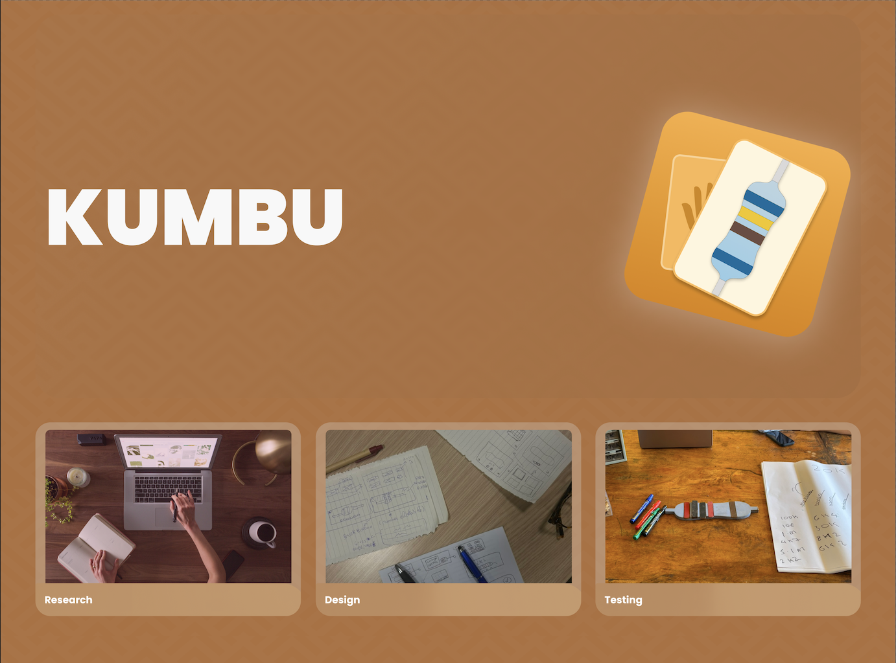

E mo qua che ci metto?.
About.

Francesco Ciaramella
Sono un UX/UI Designer laureato in Culture Digitali e della Comunicazione, con formazione presso la Apple Developer Academy. Nel mio lavoro mi occupo di progettare interfacce ed esperienze digitali partendo dalle persone e dai processi, con l’idea che il design sia prima di tutto comunicazione, non semplice estetica.
Esperienza
UX/UI Designer
Analisi e sintesi dei requisiti Lavoro sulla comprensione di contesti complessi e processi articolati, traducendo esigenze operative e di business in interfacce chiare, funzionali e facilmente utilizzabili.
Progettazione e coerenza dell’esperienza Mi occupo della progettazione e dell’evoluzione dell’esperienza utente e delle interfacce, mantenendo coerenza visiva e funzionale anche su sistemi articolati e multi-utenza.
Collaborazione e feedback continuo Collaboro costantemente con il team di sviluppo e con gli stakeholder, raccogliendo feedback, valutando vincoli tecnici e affinando le soluzioni durante tutte le fasi del progetto.
Studi
Laurea in culture digitali
Formazione focalizzata sulla comprensione delle culture digitali e dei nuovi media. L'analisi dei comportamenti sociali in rete diventa la base per definire flussi di User Experience efficaci, integrando la ricerca sociologica con le migliori pratiche di progettazione delle interfacce.
Apple Developer Program
iOS Design Standards Progettazione di interfacce native conformi alle Apple Human Interface Guidelines.
Challenge Based Learning Sviluppo di soluzioni basate su ricerca utente reale e iterazioni rapide.
App Publishing Supporto attivo nel ciclo di vita dell'app, dal concept al rilascio su TestFlight/App Store.
Apple Pier Program
UX/UI Designer - Sviluppo di progetti in partnership esterne tramite metodologia Agile (Scrum). Focus sulla progettazione di interfacce e user experience accessibili in un contesto di lavoro aziendale strutturato
Work.

B2B Order Management System (Settore Retail/Moda)

Manufacturing Management Software (Settore Industriale)
Questo portfolio
Design e sviluppo creati con il supporto di AI generativa

Redesign
Analisi critica.

Musée
Accessibilità.

Kumbu
Uno strumento d'apprendimento accessibile